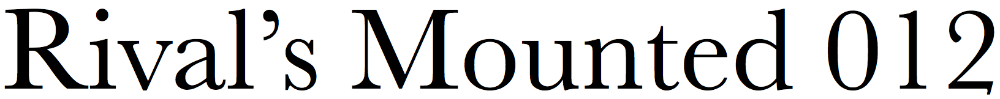
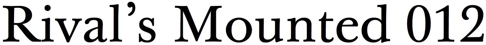
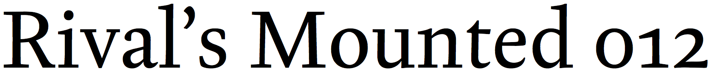

baskerville

baskerville 10

ingeborg

kingfisher
The Baskerville system font is mediocre: brittle and excessively quaint. It’s a poor representation of the work of John Baskerville, an 18th-century English printer who improved typefounding with his innovations in paper, ink, and printing. The best recreation of Baskerville’s own fonts is Baskerville 10. Though Ingeborg and Kingfisher don’t directly resemble Baskerville’s type designs, they do share the crisp and bright look that Baskerville helped popularize.